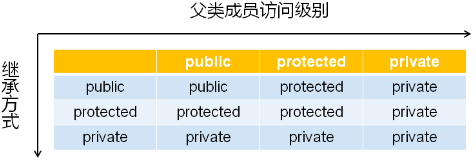

1，被忽略的细节：
1，冒号（ ：）表示继承关系，Parent 表示被继承的类，public 的意义是什么？
1 class Parent
2 {
3
4 };
5
6 class Child : public Parent
7 {
8
9 };
2，有趣的问题：
1，是否可以将继承语句中的 public 换成 protected 或者 private？如果可以，与 public 继承有什么区别？
3，有趣的尝试编程实验：
1 #include <iostream>
2 #include <string>
3
4 using namespace std;
5
6 class Parent
7 {
8 };
9
10 class Child_A : public Parent
11 {
12 };
13
14 class Child_B : protected Parent
15 {
16 };
17
18 class Child_C : private Parent
19 {
20 };
21
22 int main()
23 {
24 return 0;
25 }1，protected 和 private 地位对等，推理的角度可以过，实际的编译结果也是同样的结论；
2，本文主要分析这三种继承方式有何不同；
4，不同的继承方式（这是父类成员在子类中被外界访问的级别）：
1，C++ 中支持三种不同的继承方式；
1，public 继承：
1，父类成员在子类中保持原有访问级别；
2，private 继承：
1，父类成员在子类中变为私有成员；
3，protected 继承：
1，父类中的公有成员变为保护成员，其它成员保持不变；
2，继承成员的属性：

1，Max{继承方式，父类成员访问属性}；
2，C++ 中的默认继承方式为 private；
3，继承与访问级别深度实践编程实验：
1 #include <iostream>
2 #include <string>
3
4 using namespace std;
5
6 class Parent
7 {
8 protected:
9 int m_a;
10 protected:
11 int m_b;
12 public:
13 int m_c;
14
15 void set(int a, int b, int c)
16 {
17 m_a = a;
18 m_b = b;
19 m_c = c;
20 }
21 };
22
23 class Child_A : public Parent
24 {
25 public:
26 void print()
27 {
28 cout << "m_a" << m_a << endl;
29 cout << "m_b" << m_b << endl;
30 cout << "m_c" << m_c << endl;
31 }
32 };
33
34 class Child_B : protected Parent
35 {
36 public:
37 void print()
38 {
39 cout << "m_a" << m_a << endl;
40 cout << "m_b" << m_b << endl;
41 cout << "m_c" << m_c << endl;
42 }
43 };
44
45 class Child_C : private Parent
46 {
47 public:
48 void print()
49 {
50 cout << "m_a" << m_a << endl;
51 cout << "m_b" << m_b << endl;
52 cout << "m_c" << m_c << endl;
53 }
54 };
55
56 int main()
57 {
58 Child_A a;
59 Child_B b;
60 Child_C c;
61
62 a.m_c = 100;
63 // b.m_c = 100; // Child_B 保护继承自 Parent， 所以所有 public 成员全部变成了 protected 成员， 因此外界无法访问；
64 // c.m_c = 100; // Child_C 私有继承自 Parent， 所以所有的成员全部变成了 private 成员， 因此外界无法访问；
65
66 a.set(1, 1, 1);
67 // b.set(2, 2, 2); // 保护继承；
68 // c.set(3, 3, 3); // 私有继承；
69
70 a.print(); // 继承方式只影响继承自父类成员的访问方式，外界访问子类方式无影响；
71 b.print(); // 继承方式只影响继承自父类成员的访问方式，外界访问子类方式无影响；
72 c.print(); // 继承方式只影响继承自父类成员的访问方式，外界访问子类方式无影响；
73
74 return 0;
75 }1，父类中的访问级别影响着子类的访问，但是继承级别不影响子类的访问、影响其它外部类访问父类中的成员；
5，遗憾的事实：
1，一般而言，大型的 C++ 工程项目中只使用 public 继承；
1，这已经足够了；
2，保护继承和私有继承根本就没什么用；
2，C++ 的派生语言只支持一种继承方式（public 继承）；
1，Java、C# 等语言只有一种继承方式即 public 继承方式；
3，protected 和 private 继承带来的复杂性远大于实用性；
1，仅在学术研究领域研究；
6，C++ 派生语言初探编程实验：
1，D 语言（在 Linux 中用 gdc 编译，生成 *.out 文件）：
1 module D_Demo; // 将下面的所有代码定义为模块，模块名字为
2 D_Demo；
3
4 import std.stdio; // import 同 include
5 import std.string; // import 同 include
6
7 class Obj // 这里定义了一个 Obj 类
8 {
9 protected:
10 string mName;
11 string mInfo;
12
13 public:
14 this() // 这是 D 语言中的构造函数，D 语言中的构造函数统一的用 this 这个关键字表示，由 C++ 进化而来；
15 {
16 mName = "Object";
17 mInfo = "";
18 }
19
20 string name() // 定义两个成员函数；
21 {
22 return mName;
23 }
24
25 string info()
26 {
27 return mInfo;
28 }
29 }
30
31 class Point : Obj // 定义了一个类 Point，其继承自 Obj，D 语言中的继承方式默认的是 public 继承；
32 {
33 private:
34 int mX;
35 int mY;
36
37 public:
38 this(int x, int y)
39 {
40 mX = x;
41 mY = y;
42 mName = "Point";
43 mInfo = format("P(%d, %d)", mX, mY); // 和 C 语言中的语法规则一样；
44 }
45
46 int x()
47 {
48 return mX;
49 }
50
51 int y()
52 {
53 return mY;
54 }
55 }
56
57 void main(string[] args) // 程序运行的入口；
58 {
59 writefln("D Demo"); // D Demo；打印语句之后空一行，同 printf；
60
61 Point p = new Point(1, 2); // 动态生成 Point 对象；
62
63 writefln(p.name()); // Point，公有继承；
64 writefln(p.info()); // P(1, 2)，公有继承；
65 }1，没学过 D 语言，但是要读懂 D 语言的代码是比较容易的；
2，如果因工作需要要学习 D 语言程序设计，将是轻而易举的事情；
2，C# 语言（Linux 中用 gmcs 编译，生成 *.exe 文件）：
1 class Obj // 定义一个类 Obj；
2 {
3 protected string mName; // 访问属性 protected；
4 protected string mInfo;
5
6 public Obj() // 无返回值，函数名同类名，即构造函数，访问属性为 public；
7 {
8 mName = "Object";
9 mInfo = "";
10 }
11
12 public string name()
13 {
14 return mName;
15 }
16
17 public string info()
18 {
19 return mInfo;
20 }
21 }
22
23 class Point : Obj // 定义一个类 Point，继承自 Obj，只有一种 public 继承方式；
24 {
25
26 private int mX;
27 private int mY;
28
29 public Point(int x, int y) // 构造函数；
30 {
31 mX = x;
32 mY = y;
33 mName = "Point";
34 mInfo = "P(" + mX + ", " + mY + ")"; // 通过 + 操作符来连接字符串和整型变量，最终得到一个字符串；C++ 中可以通过重载全局的 + 操作符就能够连接一个字符串和一个整型变量最终得到一个字符串，别的语言中的特性，不明白的话，考虑下在 C++ 中如何实现；
35 }
36
37 public int x()
38 {
39 return mX;
40 }
41
42 public int y()
43 {
44 return mY;
45 }
46 }
47
48 class Program
49 {
50 public static void Main(string[] args) // 程序入口
51 {
52 System.Console.WriteLine("C# Demo"); // C# Demo
53
54 Point p = new Point(1, 2);
55
56 System.Console.WriteLine(p.name()); // Point
57 System.Console.WriteLine(p.info()); // P(1, 2)
58
59 }
60 }3，Java 程序：
1 class Obj
2 {
3 protected String mName;
4 protected String mInfo;
5
6 public Obj()
7 {
8 mName = "Object";
9 mInfo = "";
10 }
11
12 public String name()
13 {
14 return mName;
15 }
16
17 public String info()
18 {
19 return mInfo;
20 }
21 }
22
23 class Point extends Obj // extends 表示公有继承，更加直观；
24 {
25
26 private int mX;
27 private int mY;
28
29 public Point(int x, int y)
30 {
31 mX = x;
32 mY = y;
33 mName = "Point";
34 mInfo = "P(" + mX + ", " + mY + ")";
35 }
36
37 public int x()
38 {
39 return mX;
40 }
41
42 public int y()
43 {
44 return mY;
45 }
46 }
47
48 class Program {
49 public static void main(String[] args){ // 程序运行如口
50 System.out.println("Java Demo"); // Java Demo
51
52 Point p = new Point(1, 2);
53
54 System.out.println(p.name()); // Point
55 System.out.println(p.info()); // P(1, 2)
56 }
57 }1，现在已经有能力读懂 D、C#、Java 语言程序了；
1，C#、Java 可以从事网络开发、游戏开发；
2，D 语言可以从事系统开发；
2，工程里面，仅仅使用 public 继承就够了；
7，小结：
1，C++ 中支持 3 种不同的继承方式；
2，继承方式直接影响父类成员在子类中的访问属性；
3，一般而言，工程中只使用 public 的继承方式；
4，C++ 的派生语言中只支持 public 继承方式；